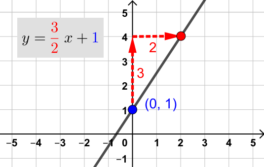
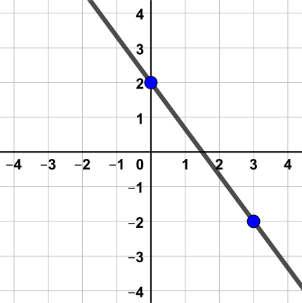
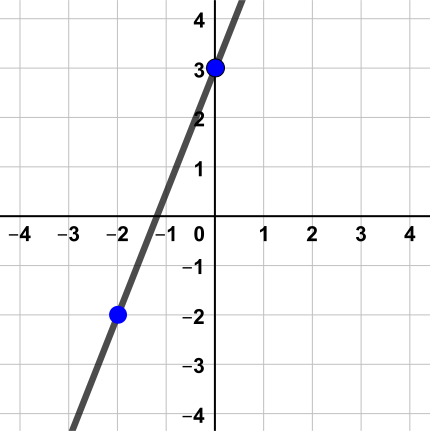

5.3 Graphing Linear Equations
Introduction
In the preceeding section, we used equations to plot points and saw that some generate graphs of lines while others create graphs with curves. In this section, we will introduce a powerful tool that allows us to easily extract important information about a line just by looking at its equation, without having to calculate multiple points. That tool is called the slope-intercept form of a line.
The Slope Intercept Form
Let's begin with a practical situation. As we walk through this carefully we'll uncover exacty what this slope intercept form is and what makes it useful.
Imagine a landscape supply company charges \(\$25\) per cubic yard for bark mulch and an additional flat \(\$35\) delivery fee. Then, when ordering bark, the total cost will start at \(\$35\) and will go up at a rate of \($25\) for each cubic yard ordered.
If we let \(x\) represent the number of cubic yards of bark and let \(y\) represent the total cost, then the equation for total cost becomes \(y=25x+35\).
Continuing what we did in the last section, let's make a table of values.
| \(x\) (cubic yards) |
0 | 1 | 2 | 3 | 4 | 5 | 10 |
| \(y=25x+35\) (total cost in $) |
$35 | $60 | $85 | $110 | $135 | $160 | $285 |
If we plot these points, we see that the relationship between the amount of bark ordered and the total cost is a perfectly straight line.

A close examination of this example where \(y=25x+35\) will give us insight into how all linear equations behave.
Notice that the point where the line crosses the \(y\)-axis is \((0,35)\). We call this the \(y\)-intercept and the \(y\)-coordinate of this point is the constant in our equation. It represents the fixed \(\$35\) delivery fee added to every order.
What is the slope of the line? We can use any two points from the table to find out. Let's use \((5, 160)\) and \((10, 285\)).
\begin{align} m &= \frac{y_2 - y_1}{x_2 - x_1} \\ &= \frac{285-160}{10-5} \\ &= \frac{125}{5} \\ &= 25 \end{align}Remarkably, this value is also in our equation as the coefficient of \(x\). In our scenario, it represents the rate of change of the cost: \(\$25\) per cubic yard of bark.
The fact that both the slope and \(y\)-intercept can both be identified just from the equation is an amazing shortcut. This holds true for any equation in the form \(y=mx+b\).
Any equation that can be put in the form \(y=mx+b\) is a linear equation. Its graph will be a straight line. Additionally,
- \(m\) represents the slope or rate of change of the line.
- The point \((0,b)\) is the \(y\)-intercept of the line.
The format \(y=mx+b\) is called the slope-intercept form of a line
The slope-intercept form is a powerful tool for understanding and working with linear equations and their graphs.
Identify the slope and \(y\)-intercept of the following lines.
(a) \(y=-2x+31\)
(b) \(y=\frac{2}{5}x-7\)
Solution:
Since both equations are in the slope-intercept form, the slope and \(y\)-intercept can be identified from the equation without any calculations.
(a) \(y=-2x+31\) has a slope of \(m=-2\) and a \(y\)-intercept at \((0,31)\).
(b) \(y=\frac{2}{5}x-7\) has a slope of \(m=\frac{2}{5}\) and a \(y\)-intercept at \((0,-7)\).
(a) Write the equation of a line with a slope of \(3\) and a \(y\)-intercept at \((0,12)\).
(b) Write the equation of a line with a slope of \(\frac{-5}{6}\) and a \(y\)-intercept at \((0,8)\).
Solution:
If we use the slope intercept form, the values for \(m\) and \(b\) can be substituted in directly.
(a) \(y=3x+12\) has a slope of \(m=3\) and a \(y\)-intercept at \((0,12)\).
(b) \(y=\frac{-5}{6}x+8\) has a slope of \(m=\frac{-5}{6}\) and a \(y\)-intercept at \((0,8)\).
Graphing Linear Equations in Slope-Intercept Form
Graphing linear equations becomes intuitive when they're in slope-intercept form.
To graph a line in slope-intercept form, first plot the point \((0,b)\), which is the \(y\)-intercept. Then, starting from the \(y\)-intercept, use the rise of the slope to move up or down and the run of the slope to move side-to-side and plot a second point. Use those two points to draw the line.
Graph the line \(y=\frac{3}{2}x+1\).
Solution:
Since this is in the slope-intercept form we know the \(y\)-intercept is \(\color{blue}{(0,1)}\). Starting from that point we'll use the slope \(\color{red}{\frac{3}{2}}\) and move up \(\color{red}{3}\) spaces and right \(\color{red}{2}\) to plot a second point.
Writing the Slope-Intercept Form of a Line Given Its Graph
If you're given the graph of a line, it's possible to extract the slope and \(y\)-intercept directly from it. The \(y\)-intercept should be straighforward to spot, since it is where the line crosses the \(y\)-aixis. The slope is not much harder, but we need to be precise.
To find the slope, find another point on the line where you are confident of it's coordinates. Then carefully count the rise and run between that point and your \(y\)-intercept. Make sure the sign of your final slope value matches the direction of the line. As we saw in the last section, lines with positive slope rise when moving left to right while lines with negative slope go down.
Find the equation of each line graphed below.
| (a) | (b) |
|---|---|
|  |  |
Solution:
(a) The \(y\)-intercept is \((0,2)\), so \(b=2\). The slope appears to be \(m=\frac{-4}{3}\). From this we conclude the equation of the line must be
\[y=\frac{-4}{3}x+2\](b)
The \(y\)-intercept is \((0,3)\), so \(b=3\). The slope appears to be \(m=\frac{5}{2}\). From this we conclude the equation of the line must be \[y=\frac{5}{2}x+3\]Finding the Slope-Intercept Form Given Two Points
If we are given two points instead of a graph then it's still possible to find the equation of the line that goes through them. It is an involved process, so we'll walk through the process together.
For our example, let's use the points \((2,5)\) as \((x_1,y_1)\) and \((6,-1)\) as \((x_2,y_2)\). We'll start with the slope formula.
\[ \begin{align} m &= \frac{y_2-y_1}{x_2-x_1} && \small \color{#5fa2ce} {\text{slope formula}} \newline &= \frac{-1 - 5}{6-2} && \small \color{#5fa2ce} {\text{insert coordinates of the two points}} \newline &= \frac{-6}{4} && \small \color{#5fa2ce} {\text{evaluate the subtractions}} \newline &= -\frac{3}{2} && \small \color{#5fa2ce} {\text{reduce the fraction}} \newline \end{align} \]The only part of the slope-intercept form that is missing is the \(y\)-intercept \(b\). Since neither of our points was the \(y\)-intercept, we will need to put the coordinates of one of our points, along with the slope we just calculated, into the slope-intercept equation and solve for $b$. We will use the point \((2,5)\) and, of course, \(m = \frac{-3}{2}\).
\[ \begin{align} y &= m x + b && \small \color{#5fa2ce} {\text{slope-intercept form}} \newline 5 &= -\frac{3}{2}(2)+b && \small \color{#5fa2ce} {\text{insert the slope and the coordinates of the point}} \newline 5 &= -3+b && \small \color{#5fa2ce} {\text{simplify}} \newline 8 &= b && \small \color{#5fa2ce} {\text{add $3$ to both sides}} \end{align} \]
With both \(m\) and \(b\) in hand, we can now say that $y=\frac{-3}{2}x+8$ is the line that goes through the points \((2,5)\) and \((6,-1)\).
Interpreting the Slope and Y-Intercept
Linear equations are used to model various real-world situations. Understanding what the slope and y-intercept mean in context can allow us to construct an equation in slope-intercept form for a given scenario.
As we discussed in section 5.2, slope is a rate of change. A rate is ratio of two quantities. Such rates are often described using the word per (miles per gallon, servings per package, dollars per hour, feet per second) or something equivalent (two tickets for each person, ten-thousand steps every day, etc.).
If a situation has a constant rate of change, that value is the slope. In our introductory bark example, the slope was \(25\) since the price changed at a rate of \(\$25\) per cubic yard.
Since the \(y\)-intercept occurs when \(x=0\), the value \(b\) is usually a starting value or an initial amount. In our bark example \(b=35\) because every order started with a flat deliery charge of \(\$35\).
Suppose a gym has an initial joining fee of \(\$50\) and monthly membership fee of \(\$20\). Construct an equation in slope-intercept form that represents the situation.
Solution:
In this scenario, the initial signup fee is the \(y\)-intercept and the monthly fee is the slope. Using \(m=20\) and \(b=50\), the equation of the line is:
\[ y = 20x + 50 \]This linear equation allows us to calculate the total cost of being a member at the gym membership for \(x\) months.
Conclusion
The slope-intercept form of a line stands as the most used linear model across math, science, engineering, and countless other fields. Almost anytime anyone asks for a line, they are likely looking for \(y=mx+b\).
In the next section our focus shifts and we'll begin looking at graphs of nonlinear quadratic equations.